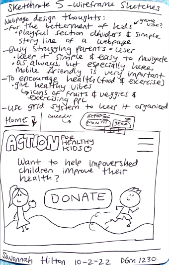

CASE STUDIES
Carnelian Water Services
Carnelian Water Services is a site for my Dad's new company. He is offering the service of providing salt pallets to replace the used ones for people's salt water softening system.
In November 2022, the project needed to happen to publicize my Dad's new water softening company online. He will be able to use QR codes to share his site quickly and easily. It needs to show what services he provides at what cost.
The user of his website would be the old woman who doesn't have the strength to lift the heavy salt pallets alone. It could also be the dad who wants a break from the arduous task of replacing salt pallets.

I coded the website and came up with some of the design ideas. My cousin Brett was the graphic designer and made the logo and an idea of what the home page of the website would look like.

My dad needed me to get the site done before late December so he could publicize his services as a potential Christmas gift. I also was very overwhelmed and busy with my classes at the time. I also had never coded a website for a company before and my skills only include coding in HTML, CSS, and a tiny but of JavaScript at that point.
First I went over the site and company idea with my dad. I got clarity on what he wanted to get out of having a website and who his ideal customer was. We then did some sketches together to map out the information hierarchy.
Next I communicated with my cousin Brett, the graphic designer for this project, to see what kind of design, font, and color scheme he was going for. After that I started coding the site. I used examples of other sites for good navigation design, FAQ designs, and pricing table designs. In the end the site was ready to deploy to its already purchased domain. I even helped my dad make flyers with the site QR code.
Unfortunately my dad hasn't moved forward with his business with great effort yet. He had some additional tweaks he wanted to make to the site, but overall it's a very functional and visually pleasing site. He has plans to work with a UVU student to get his marketing going for the company within the next semester of Fall 2023.
Action For Healthy Kids
For my DGM 1230 class we were instructed to find a non-profit website that needs some work and redesign it. I am personally passionate about the importance of mental and physical health. I know exercise and proper nutrition helps people feel better in life in every way. Ironically, I stayed up all night to finish the website, but that's besides the point haha.
Because I am passionate about building healthy habits I found a non-profit site that seemed it could do a great deal of good, yet needed a revamp. The site I decided is for an organization called "Action For Healthy Kids", aka AFHK, and here is the link to their site.
Some issues I found were that the site was very overwhelming, many links didn't work, the site wasn't as responsive as I would like, and the navigation was very confusing and problematic.

Above take a look at the screenshots of the site at first glance, and the site navigation. Pretty confusing and overwhelming right? To organize my understanding of how to best reorganize the AFHK site I created a drawn sitemap of where all the links led to and were organized. See below for visual.

Next, I created wireframe sketches of how I wanted to layout the information for the organization in a simpler, more concise way. I wanted the site to be cute and kid-friendly, yet still engaging for adults. I didn't design for every single route that the AFHK site had, especially considering some of the links led nowhere, but I tried to include the basic beginnings of what would be necessary for the site to be less confusing on first view and click.
After that I created basic digital wireframes to make more clear what I wanted the site to be online, rather than just on paper. To start, I kept the wireframe in black and white to focus on the layout, rather than the color scheme. These wireframes were created for the 3 different media query sizes: mobile, tablet, and desktop.

Finally, I created a pattern library, a final wireframe, and a prototype that would allow you to simulate if the website were coded using Adobe XD's prototype feature!
In the end I coded parts of the site, but adjusted it to meet the requirements of the final capstone assignment for my DGM 2740 Class.
UVU's Registrar's Website
The UVU Registrar is an office that deals with UVU's Graduation, Registration, and Transfer Credit. They need the site redesigned and our DGM 2240 class is taking that task on in groups.
The Registrar's site needed to be redesigned to have greater consistency across pages, greater functionality, and better and clearer access to the customer service provided by the Registrar's Office.
The user of the site would mostly be a UVU student, whether one that is graduating, registering for classes, or transferring to or from UVU. The audience may also include parents helping their kids who are going to college and counselors for other colleges or for UVU.
I worked with a team of five to conduct UX research on how to improve the Registrar's Office site.
The limiting factors are that those working on the UX research are students who are only available for the duration of the DGM 2240 class an$ the framework in which the UVU website is within.

We started by interviewing our stakeholders about what they wanted. We then user surveys, one on one interviews, and eye-tracking research. Additionally, we selected design principles, made storyboards, made provisional personas, and made plans of what would best suit the user in the redesign. We also presented to our stakeholders, made wireframes and surface comps to show what the website could end up like.
In the end we gleaned lots of valuable input from our research. We realized that users weren't able to access the Registrar's Office from UVU's homepage. Our surface compositions were the accumulation of all our research to result in how we believed the Registrar's site should be redesigned. They had the option to use our designs if they desired.
Portfolio Design & Code
My first portfolio site was created for my DGM 1600 class to be used as a portfolio website. It's meant to be a great resource to show off to potential employers.
I needed to complete the portfolio website assignment for class and I needed a way to present my projects to show the work I've done.
The user would be someone who's looking to hire me and wants to see what kind of work I've done. The site should give a sense of who I am and what my style is.
My professor used the example of another coder's design for a portfolio website and had us follow along. He demonstrated the basic design and skeleton of the site, but had us add additional functions and styles to the project.
The main limiting factors were the duration of the semester and the fact that we had to stay within the portfolio design selected by the professor Thor Anderson. I could add as many project example links as I wanted to as well.
First our professor talked with us about the design of the site he expected us to code and then looked for an example of what someone else had done for their portfolio website. I followed the coding examples of my professor to code a portfolio website skeleton then on my own I worked to add my own unique twists to the site. I tried to improve the color scheme and keep my own style to be introduced. I added my own projects and icons with links to my social media.
In the end I used that portfolio site when applying to internships for this summer! With that work on display I was able to land an internship with Northrop Grumman for the summer of 2023.
After completing my internship with Northrop Grumman I knew it was time to revamp my portfolio website. This would allow me to include my more recent projects, personalize my brand and improve my portfolio site. Having a new, more professional looking website would also allow me to submit my work to the Web Development program at UVU to be officially in the major, and help me more confidently apply for summer 2024 internships and potential part time coding jobs.
During the summer I had brainstormed logos, website domains, and portfolio styles I would want. Looking as various developer portfolio templates and actual website gave me some ideas of what I needed to include. As the Fall 2023 semester began I set aside time to make wireframes as pictured above.
Finally, I spent some late nights coding my ideal portfolio website, new and improved. I used FileZilla to upload my code to the home of my work on the web, savcode.co!
Weddingcode.co
On June 23rd, 20213 my sweet fiancé, Preston, proposed to me! It was one of the most thrilling nights of my life. I was so excited to plan the wedding of my dreams with my favorite person. Dreams soon gave way to reality as I came to realize how expensive and stressful wedding planning could be. After a month of lots of stress, the plans for our December wedding started to come together and I could relax.
Much of the wedding costs appeared overpriced, but Preston and searched for the most reasonable prices we could find in each area of our budget. The high end customer service of individuals like our photographer and my alterations seamstress helped to bring back my excitement for the little details of our wedding. Our engagement photos turned out SO high quality and adorable, and were delivered in an easy to access format. Our photographer communicated clearly and hyped us up. The alterations seamstress took my complicated dress and made it look gorgeous, despite having lots of delicate and daunting tasks to complete.
It dawned on me that it could be a good idea to create my own small wedding business. In Utah so many couples get married, and often quickly. The demand is high for wedding services. One of my friends who came to the same realization after an October 2022 wedding, had even recently began a small business to do bridal hair. I wanted to contribute my skills to creating a dreamy wedding for others too. Coding is a quite applicable skill in most situations, so I knew it could come in handy in this situation.
I had seem sites like “The Knot” be used, but I had never seen a high-end, personally designed, coded, and serviced website for a wedding. I wanted to create that experience for someone. A wedding website can be incredibly useful by including dates, addresses, the wedding day schedule, photos, the couple's story, their registry, Venmo, and even their RSVP form.
Like any good student of User Experience, I decided to get a survey to get a small pool of feedback from my Instagram followers on what people would like to have included in a wedding website, and if they thought it was even useful. I got 20 responses, all of which were very helpful and enlightening.
At the same time I was planning my business idea, I was also planning what my own wedding website, that I would be designing and coding, would be like. I decided I would create both websites, and I could draw inspiration for both of them.
I searched the web for inspiration of various wedding websites and then created my wireframes and mockups for the business (I decided to call it weddingcode.co), and my personal wedding website.
I haven't yet coded the website, but with my mockups designed, Instagram account made, and inspiration in hand and mind, I' ready to take the next step in developing my business and wedding website.
Pposterchildd Portfolio
My friend, and previous roommate. Paige is an amazing graphic design major at UVU. She wants a way to show off her artwork.
Paige needs a portfolio website to show off her work to potential employers. I need to code a site that will display her artwork, her contact information and eventually an online store where she could send her artwork. The site must tackle the task of maintaining her style in the site, but also being functional enough
The user would be someone who was looking to hire Paige for her graphic design skills or someone who wanted to buy Paige's artwork.
I so far have only met and planned with Paige, but I will code the site for her, while she will do the basic planning for the design.
The limiting factors are Paige needs to approve of the site and it needs to be practical enough to be useful, but creative enough to show her style. The limiting factor is that the semester we were going to plan her site and have me code it ended up being extremely busy, so I wasn't been able to work on the project as much as desired.
Despite the unfinished project, we did get a good start. First, I talked about Paige's vision for her site. We then did some sketches to help us brainstorm on the vibe of what the site would be like and worked to make sure we were on the same page. We also looked at examples of other graphic designer's websites. Paige made some basic wireframe ideas and decided what fonts she wanted. An idea she had was a colorful, flowing gradient in the background, with simple black borders and black text. An example of what I thought she might be looking for is pictured above. She wanted me to use the fonts Apfel Grotzek and Vintage Glamour. I then created the html and scss folders, but I haven't coded the site yet.
The end of this project hasn't come yet since I need to code the site, and every now and then Paige comes up with a new idea and considers changing the design for her website, but I'm learning how to work with a graphic designer and how to create more creative websites.
Originally Paige's brand was to be called Pposterchildd, but recently she decided on another brand title. She is always full of new ideas, so in the coming months we'll work together to pick back up from where we left off and pivot to the design of her new brand vision.
THANK YOU FOR READING MY CASE STUDIES!
I would love to share my web development journey with you. Feel free to contact me to network, work together, or enlist my services. I'm happy to help and connect.
- SAV